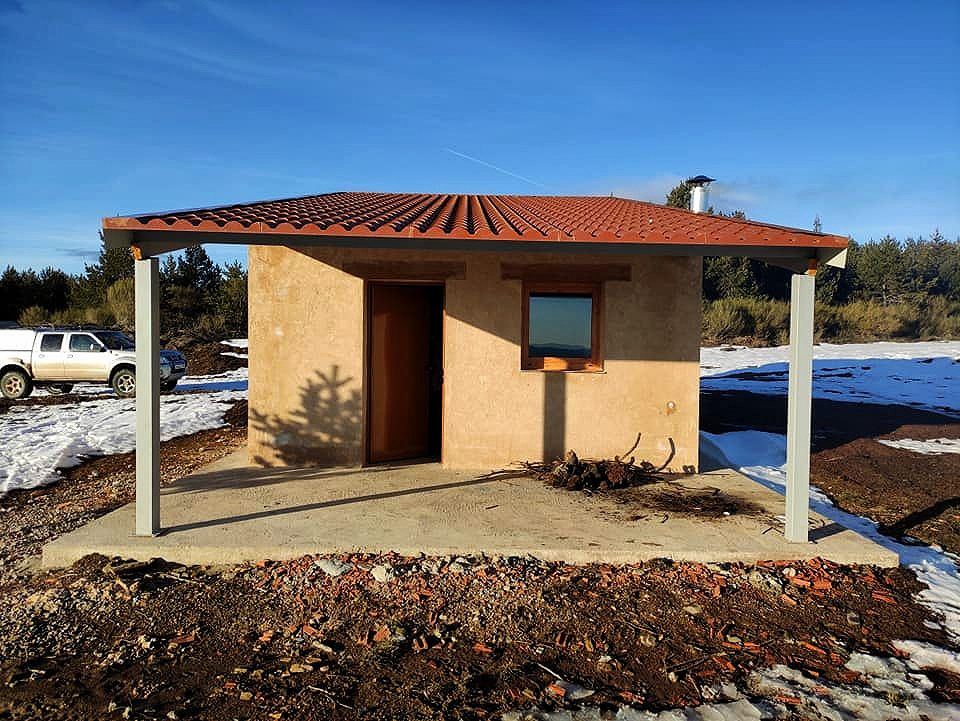
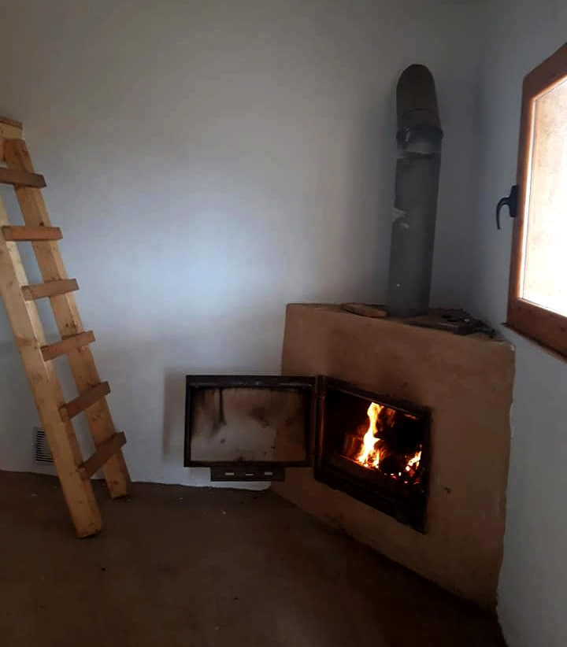

Refugio de Viforcos
Un lugar para resguardarse, descansar y vivir la naturaleza en su estado más puro.
Descubrir el refugioUn alto en plena montaña
Entre altos, valles y pinares, en plena alta montaña, el Refugio de Viforcos se convierte en un punto clave para los caminantes que recorren la zona.
En invierno, rodeado de nieves y nieblas, y en verano, cubierto por una alfombra de brezo, flores y cielos llenos de estrellas, ofrece un espacio único para descansar, resguardarse o pasar una noche en plena naturaleza.
Alta montaña
Ubicado en un entorno natural único rodeado de valles y pinares.
Estufa
Cuenta con estufa para resguardarse del frío en los meses de invierno.
Zona para dormir
Espacio habilitado para pasar la noche durante la ruta.
Cielo estrellado
Un lugar perfecto para disfrutar de noches únicas en la naturaleza.
Naturaleza en estado puro
Paisajes que cambian con las estaciones, desde la nieve invernal hasta los cielos de verano.



Descansa en plena naturaleza
El refugio ofrece a los visitantes un lugar donde resguardarse, descansar o pasar la noche, disfrutando del silencio, el entorno y la experiencia única de la montaña.